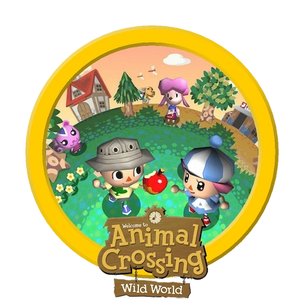
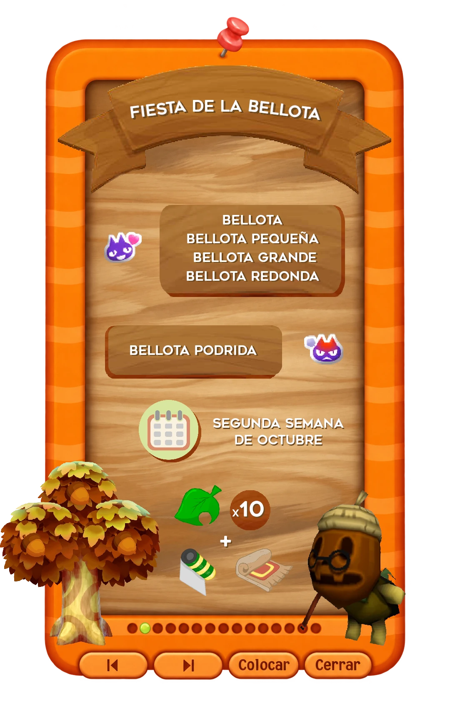
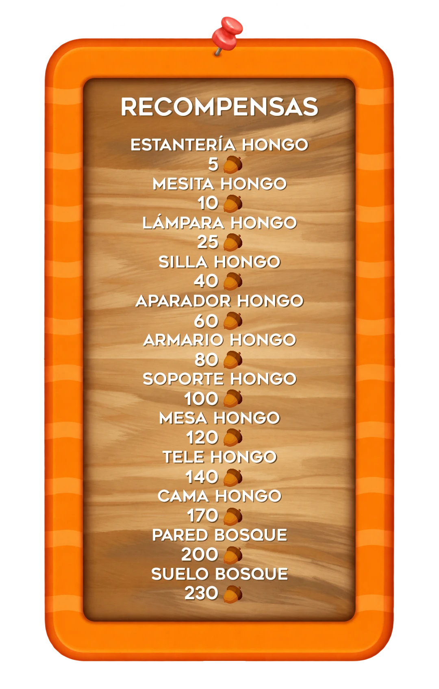
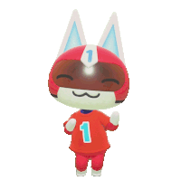

Eventos


Mientras el evento de la Fiesta de la Bellota está activo, no aparece ningún visitante especial, excepto Totakeke en su horario y sitio habitual.
Todos los tipos de bellota se pueden vender en la tienda de Tom Nook por 100 bayas.

PROXIMAMENTE: Listado del Museo, Catálogo Tom Nook, Visitantes y mucho más.